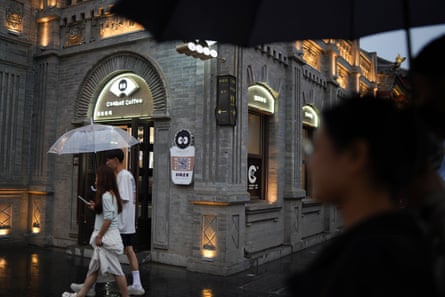
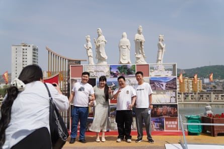
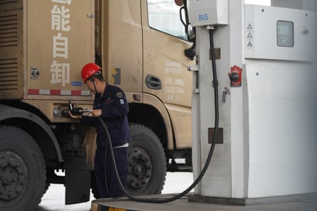

D eep in the recesses of an underground cavern, covered in dust and soot, Xu Xiaobo wondered why, having recently graduated with a degree in mechanics, he was on his hands and knees sifting through layers of coal sludge. But there was no time to ponder the ancestral forces that had brought him down into one of his province’s oldest mines. There was coal to dig for.
New to the job, keeping up with colleagues was challenging. As he tried to crawl at speed under a conveyor belt of coal, he landed badly and sprained his wrist. He still can’t rotate it properly.
Xu was desperate to leave the mine. He applied for scores of jobs, but along with millions of other young people who graduated during the pandemic, he discovered that few places were hiring. One company offered him a job on the other side of the country but it was too far from his family.

Aerial photo of coal mine in Lüliang, a city in Shanxi province.Photograph: Ding Gang/The Guardian

Coal trucks lined up on the road outside Lüliang.Photograph: Ding Gang/The Guardian
“When I first graduated, I had big dreams, maybe a bit too ambitious,” the 26-year-old said, sitting outside the coal mine in the ancient city of Datong, Shanxi province, where he still works. Eventually he managed to transfer to a job in administration. “I hate the job of coal digging,” he said, his gleaming white Reeboks testament to the fact that he is now able to work above ground.
Now, though, as China charges down the path of modernisation and away from the coal mines that powered the first few millennia of the country’s rise, Xu has found what he thinks is a brighter future in his home province of Shanxi. He’s finding part-time work as a tour guide. “I truly love my hometown and hope that more people can see it – not just as a place full of coal dust and heavy pollution,” Xu said.
Xu’s personal journey is one that Shanxi, China’s top coal producing province, wants to mimic on a grand scale. But the challenge is immense. With the lowest GDP growth in the country and a local economy that is heavily reliant on China’s most polluting resource, Shanxi’s fate in China’s green future is uncertain.
China has pledged to peak carbon dioxide emissions by 2030, and to achieve carbon neutrality by 2060. Many experts believe that, thanks to the rapid growth of clean energy systems, China’s emissions will peak ahead of schedule , possibly as soon as this year. Now, as China’s policymakers develop the 15th five year plan, the economic and planning document that will lay out the priorities for the period between 2026 and 2030, analysts are watching closely to see how China’s green agenda will be balanced against social and economic concerns.
In April, Xi Jinping, China’s leader, said: “No matter how the international situation changes, China will not slow down its efforts to address climate change”. He also spoke of the need for a “fair transition”. That question is of particular importance to the 35 million people of Shanxi.
Zhuangshang Village, Shanxi Province.Photograph: Ding Gang/The Guardian
*****
Shanxi is at the heart of a transition that will have global, existential ramifications. In 2024, it produced 1.27bn tonnes of coal, more than India. If Shanxi was a country, it would be the second-biggest coal producer in the world, after China. That coal was dug up to feed a country whose energy demands are growing rapidly each year – at a pace that, until recently, the increases in renewable capacity have struggled to keep up with. Coal is by far the largest source of CO2 emissions from fuel in China. According to the World Bank, the transition from coal to clean energy is “the most important climate change mitigation action in the world.”
In recent years, China’s build-up of renewable energy has accelerated at a rate that has stunned even the most optimistic environmentalists. China is building more wind and solar power than the rest of the world combined, and in April its wind and solar power generation capacity surged to nearly 1,500 GW, exceeding fossil-fuel power for the first time. Recent analysis suggests that China’s CO2 emissions are in decline, at least for now.
But China’s leaders have pledged, repeatedly, that coal will continue to have a supporting role in China’s energy system. And when it comes to actual power generation in China’s energy mix, coal still accounts for nearly 60%, according to data from Ember, an energy think tank. This year’s government work report pledged to “increase coal production and supply capacity”, something that many in China’s system see as essential to ensuring energy security.
The spectre of blackouts, which paralysed parts of China in 2021 and 2022, haunt local officials. A lack of air conditioning in China’s scorching summers can be fatal to the elderly and vulnerable, while industry grinds to a halt without electricity. People familiar with the conversations happening inside China’s planning offices say that the recent power outages in Iberia were pointed to as an example of the perils of over-reliance on seasonally unstable renewable energy. The government has not announced a clear timeline for coal phase out. “In every document on realising the dual carbon goals, and realising the energy transition, there is some kind of role or carveout for the coal industry,” said Lauri Myllyvirta, the co-founder of Centre for Research on Energy and Clean Air, a think tank.
Nevertheless, with improvements in battery storage technology and power grid modernisation, the direction of travel away from coal seems clear. Prices are already in decline, as are coal imports.
“As soon as China starts to reduce its coal reliance, Shanxi province is going to be more directly hit,” said Tom Wang, a Shanxi native and climate activist. He fears the consequences of mass unemployment. “A machine can sit around getting rusty. But a person will have to be fed. A person will have a family to support … It’s about survival. It’s about how you can live with dignity”.
Coalball Coffee in Taiyuan, Shanxi province.Photograph: Ding Gang/The Guardian
Souvenirs in Taiyuan, Shanxi province.Photograph: Ding Gang/The Guardian
Everywhere you look in Shanxi, there is coal. Mines dot the arid landscape. Lumbering coal trucks share the highways with sleek new electric vehicles. In Taiyuan, Shanxi’s capital, there is even a coal-themed cafe, selling coal-inspired drinks and cutesy anthropomorphised lumps of coal. “It represents Shanxi,” explains the young barista. “As long as the rest of the country needs it, we will provide it”.
Around one in ten people in the province are employed in coal and related industries. “My grandfather, my father, my maternal grandmother, and even my aunt – they all work in the coal industry. They don’t want to see the coal enterprises shut down,” Xu said.
The world is littered with communities that have been left behind by modernisation. When towns in the Appalachian mountain range in the US lost hundreds of thousands of manufacturing jobs in the 1990s and 2000s – a process which accelerated when China joined the World Trade Organisation in 2001 – opioid-related deaths increased significantly.
And China has its own examples, too.
The provinces of north-east China, known collectively as Dongbei, saw widespread factory closures in the 1990s when China shifted from a planned to a market economy. Millions of workers lost their jobs, and crime rates rose. Even today, the region, which has struggled to recover, is known as China’s Rust Belt.
Local officials are well aware of this problem. Shanxi’s provincial work report for this year said that getting rid of the “excessive dependency” on coal “still requires hard work”. More than 1.7m coal-related jobs are expected to vanish by the end of the decade, creating an economic time bomb for local officials.
One strategy has been to develop Shanxi’s tourism industry. Young entrepreneurs like Xu are at the forefront of that drive. He wants his home city of Datong to avoid the fate of rust belt cities, such as Hegang, a mining city in Dongbei’s Heilongjiang province that is now one of the poorest places in China. “It’s also a resource-depleted city,” Xu said. “So perhaps one day, our city, Datong, might end up like Hegang. But where we’re stronger than Hegang is that Datong has a deep cultural and historical heritage. So maybe when that time comes, young people will start leaving, but if I start working early in the tourism industry here in Datong – in the cultural tourism sector – then maybe I won’t have to leave when that time comes.”
*****
Tourists at Xiaoxitian temple.Photograph: Ding Gang/The Guardian
Guangsheng temple.Photograph: Ding Gang/The Guardian
As with its rich reserves of coal, Shanxi has abundant cultural resources – it just hasn’t quite figured out how to use them. Nowhere is this more apparent than Linfen, a small town of just 90,000 people and a few ancient temples. During last year’s National Day holiday, its population briefly doubled when 91,000 tourists flocked to the town, a year-on-year tourism increase of 335%, according to local authorities.
The sudden rush of tourists to two previously little known temples deep in China’s coallands is thanks in part to the viral popularity of a Chinese video game, Black Myth: Wukong , which was released last year. Based on classic Chinese mythology, the game includes intricate reconstructions of temples including Xiaoxitian and Guangsheng in Linfen. Both sites have since rapidly plastered themselves with Black Myth merchandise. Guangsheng erected a 7ft statue of the Destined One, the game’s staff-wielding monkey hero, at the entrance to the prayer halls.
The Black Myth Monkey King sculpture in front of Guangsheng temple.Photograph: Ding Gang/The Guardian
Poster of Black Myth: Wukong at Xiaoxitian temple.Photograph: Ding Gang/The Guardian
But the transformation into a tourist hotspot hasn’t been a totally smooth one. Some visitors grumbled that the car park at Xiaoxitian was hard to navigate. The nearby accommodation options are limited. A 43-year-old photographer surnamed Li said that visiting Xiaoxitian felt “immersive” after playing the Black Myth video game. But sometimes, he said, ruminating on the fake cultural relics that have been built in nearby towns, “you feel they have spent their money in the wrong place”.
Wang Xiaoqi and Yu Peishi, tourists at Guangsheng temple, agreed. Aged 72, they have not played the Black Myth video game. But Shanxi has not learned how to tell its own story, they said. Take London’s Big Ben as an example, Wang said. It is “much, much younger” than the relics in Shanxi, “but its fame is much, much greater”. The UK has a better public relations strategy, Yu chimed in, resting with his puppy in a rucksack on his lap. “Everyone in the world knows about it. It’s about cultural influence. Here, it’s more regional, lacking in that kind of vision and global reach”.
Tourists Wang Xiaoqi and Yu Peishi at Guangsheng temple.Photograph: Ding Gang/The Guardian
Shanxi isn’t just betting on tourism. It is also trying to incorporate China’s nationwide renewables boom into the local economy.
By the end of last year Shanxi’s total installed capacity of clean energy reached 61.89 GW, roughly the same as the UK’s . More than half of that came from solar, which reached 34.8 GW last year. In 2022, one of China’s biggest solar companies, LONGi, opened a solar panel factory in Datong, which now employs over 160 people. More than half of the workers come from the coal industry, the company said.
Other companies from Shanxi’s coal-dominated economy are hoping to reinvent themselves as part of China’s “clean coal” future.
Meijin Energy, based in Taiyuan, Shanxi’s capital, is one of China’s biggest private coke companies. Founded in 1981, the company has the capacity to process more than 6m tonnes of coal each year, and 11m tonnes of coke. Its headquarters is a sprawling factory complex on the outskirts of the city. According to the company’s chairperson Yao Junlian, Shanxi is the “vanguard of the national energy revolution”.
A desire to be part of this revolution led the company to start developing a hydrogen fuel in 2016, turning a byproduct of the coking process into clean fuel for vehicles. Sitting in the offices of the shiny new hydrogen division of the Taiyan compound, Ma Kai, a general manager, explained: “In the past, during the coking process, we might have just burned off or discharged the coke oven gas directly. First, that caused air pollution and had a negative environmental impact. Second, it meant we weren’t fully realizing the value of the resources.”
Meijin Energy hydrogen refuelling station in Taiyuan, Shanxi province.Photograph: Ding Gang/The Guardian
Workers at Meijin Energy refuelling with hydrogen.Photograph: Ding Gang/The Guardian
“Now, we extract and turn all the valuable components contained in the coking process into usable products. This not only maximizes the value of the raw materials and improves our overall efficiency, but also plays a crucial role in environmental protection.”
Meijin’s site in Taiyuan has an annual production capacity of more than 1,500 tonnes of hydrogen. Much of this goes back into the coal eco-system. Shanxi’s highways are loaded with lane after lane of towering coal trucks, some 500,000 in total, according to Ma. As Shanxi tries to decarbonise its transport sector, hundreds of hydrogen-fuelled vehicles, many made by Meijin, have started to join their ranks.
But experts are sceptical about the benefits of this kind of coal-to-chemical processing in the green transition. Even Ma acknowledged that it was a “contradiction” that the production of this clean fuel required digging up and burning one of the dirtiest resources. “There is no explanation that I know of about why the coal-to-chemical industry would be part of the clean utilisation of coal,” Myllyvirta said. The concept of ‘clean coal’ is “the way that the policymakers hedge between clean energy and coal to ensure that the coal industry has a role to play in the transition.”
Worker at Meijin Energy.Photograph: Ding Gang/The Guardian
An aerial view of Meijin Energy.Photograph: The Guardian
And the numbers so far are tiny. Meijin employs over ten thousand people in Shanxi, with fewer than 100 in the hydrogen sector. Hydrogen accounts for less than 5% of the company’s revenue. Last year, the company recorded a loss of more than 1.1bn yuan, which it attributed to plummeting coke prices amid an economic downturn.
Wang, the activist, believes that the answer to such economic challenges is to move away from coal entirely. “I’m not really a believer in the existence of the coal industry, because as soon as you dig it out, there are greenhouse gas emissions”. Instead, Wang believes Shanxi has the potential to build a thriving economy, powered by its massive installations of clean energy, that can sustain the province without the need for coal.
But Shanxi’s fate isn’t entirely in its hands. Two-thirds of the coal mined in Shanxi is exported to other provinces. Shanxi is “the heart of the entire country,” said Xu, the former miner, “continuously sending out energy and fresh blood to the rest of China”.
Additional research by Lillian Yang